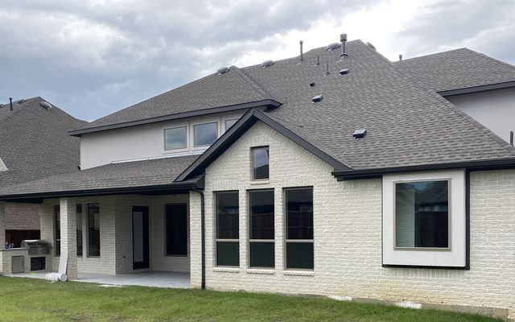
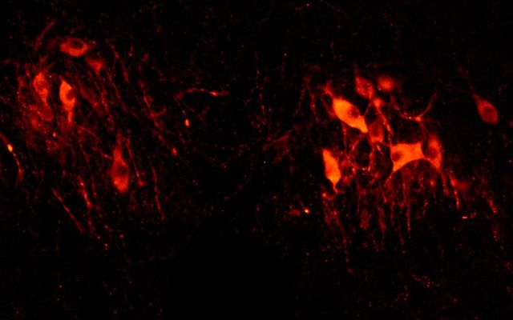

Ato Oppong Aikins, PhD, BPharm
Clinical data scientist and pharmacist turning clinical laboratory data into evidence people can act on.
I have a PhD in Integrative Physiology and 5+ years of experience in data science and statistical analytics. As a Senior Statistical Fellow at Labcorp, I led real-world evidence studies on large national clinical laboratory datasets, from hypothesis to publication. I work in Python, SQL, R, Excel, Power BI and Tableau, and use machine learning, causal inference, A/B testing and experimental design. As a pharmacy owner and the developer of a pharmacy management system, I also apply data to day-to-day operational decisions.
- 5peer-reviewed articles
- 9conference abstracts
- 5+ yearsin data science
Experience
Senior Statistical Fellow in Clinical Data Research
- Led real-world evidence studies from hypothesis development to publication using large national clinical laboratory databases
- Extracted, cleaned and analyzed patient laboratory records using SQL, Python and statistical and machine learning methods
- Evaluated the impact of the Choosing Wisely campaign on folate test ordering, quantifying changes in test utilization after a national intervention
- Established age-specific total IgE reference intervals and assessed their diagnostic utility in predicting allergen sensitization
- Analyzed national trends in gestational diabetes, measles testing and HIV PrEP panel use to inform public health and test-ordering decisions
- Worked cross-functionally and presented findings to technical and non-technical stakeholders, and at national meetings including IDWeek, ADA and ACG
Owner, Delonix Pharmacy; Founder, Lapwing Systems
- Built PharmWing, a pharmacy point-of-sale and management system that captures sales, inventory and operational data
- Use sales and inventory data to guide operational decisions in a community pharmacy
Graduate Research Assistant, Integrative Physiology
- Designed and ran controlled experiments on neuroendocrine regulation in liver cirrhosis, focusing on dilutional hyponatremia
- Collected and statistically analyzed electrophysiology, optogenetics, imaging and physiological data from rodent models
- Taught in physiology, anatomy, biochemistry, genetics and data informatics courses, and mentored students
Medical Science Liaison
- Led product forecasting and territory performance tracking for long-acting insulin (Lantus)
- Won the “Rookie of the Year” award in 2016
Pharmacist
- Improved inventory management, reducing medication waste by 30%
Selected work
Labcorp studies
Choosing Wisely and folate test ordering
Measured how a national campaign changed folate test utilization in a national reference laboratory. Published in The Journal of Applied Laboratory Medicine, 2025.
Age-specific total IgE reference intervals
Built age-specific reference intervals and tested how well they predict allergen sensitization.
Anti-glycan antibodies in Crohn’s disease
Assessed the diagnostic and prognostic value of novel antibodies, especially in ASCA-seronegative patients.
Read the abstractAnti-mitochondrial antibodies in PBC
Evaluated anti-sp100 and anti-gp210 antibodies in the diagnosis of primary biliary cholangitis.
Read the abstractHIV PrEP panel utilization
Analyzed how clinicians order CDC-aligned HIV PrEP panels.
Read the abstractTesting patterns and costs
Further studies on gaps and disparities in hepatitis B testing, unnecessary thyroid testing and its cost, vitamin D testing and deficiency rates, and one-step versus two-step gestational diabetes diagnosis.
Data science projects
Reducing building energy use
Omdena AI for Climate Change project with an international team of data scientists and ML engineers.
Predicting Falcon 9 landings
IBM capstone predicting whether a SpaceX first stage will land, with web scraping and an interactive dashboard.
Predicting road traffic collision severity
Classification models for the severity of road traffic collisions.

California housing prices
An end-to-end machine learning project, from preprocessing to model selection.

PhD dissertation analysis
Preprocessing, visualization and statistical analysis of data from a dissertation sub-project.
COVID-19 data exploration
Exploring a COVID-19 dataset in SQL Server, with dashboards.
Publications
- Walworth CM, Gillim L, Dale S, Martens SK, Alfego D, Aikins AO. Measles testing in a large commercial laboratory in the United States, 2023–2025, in an era of increasing measles infections. Open Forum Infectious Diseases 13 (Suppl 1).Conference abstract, IDWeek 2025
- Aikins AO, Alfego D, Katayev A, Naides S, Rafalko J, Letovsky S, Valcour A. Diagnostic utility of age-specific total IgE reference intervals in predicting allergen sensitization: a retrospective analysis. Annals of Allergy, Asthma & Immunology 135(5), S23–S24.Conference abstract
- Appiah CB, Aikins AO, Farmer GE, Cunningham JT. Nitric oxide and inflammation in chronic intermittent hypoxia: contributors to hypertension and cognitive impairment. Brain, Behavior, and Immunity. 2025.Peer-reviewed article
- Aikins AO, Ranjitkar P, Alfego D, Shajani-Yi Z. Rising rate of gestational diabetes in adults from 2012–2022: real-world evidence from a national laboratory database. Diabetes 74 (Suppl 1).Conference abstract, ADA 2025
- Aikins AO, Shajani-Yi Z, Nagendra S, Alfego D, Ranjitkar P. Impact of the Choosing Wisely campaign on folate test utilization: an observational study in a national reference laboratory. The Journal of Applied Laboratory Medicine. 2025.Peer-reviewed article
- Yang J, Aikins AO, Punzalan R, Alfego D, Chun KY. Serum anti-mitochondrial antibodies including anti-sp100 and anti-gp210 in the diagnosis of primary biliary cholangitis. ACG 2024. AbstractConference abstract
- Walworth C, Gillim L, Alfego D, Aikins AO. Clinician utilization of CDC-aligned HIV PrEP panels. IDWeek 2024. AbstractConference abstract
- Yang J, Aikins AO, Alfego D, Chun KY. Unmasking Crohn’s disease: novel anti-glycan antibodies may improve diagnostic accuracy while providing prognostic value, especially in ASCA-seronegative patients. UEG Week 2024 and ACG 2024. AbstractConference abstract
- Ranjitkar P, Aikins AO, Alfego D, Shajani-Yi Z, Nagendra S. Ordering trends in serum folate: a national reference laboratory observational study. PLUGS Summit 2024.Conference abstract
- Aikins AO, Farmer GE, Little JT, Cunningham JT. Effects of bile duct ligation on the inhibitory control of supraoptic vasopressin neurons. Journal of Neuroendocrinology. 2023;35(6).Peer-reviewed article
- Aikins AO, Little JT, Rybalchenko N, Cunningham JT. Norepinephrine innervation of the supraoptic nucleus contributes to increased copeptin and dilutional hyponatremia in male rats. American Journal of Physiology: Regulatory, Integrative and Comparative Physiology. 2022;323(5).Peer-reviewed article
- Aikins AO, Brock C, Little JT, Farmer GE, Cunningham JT. Bile duct ligation changes the inhibitory control of vasopressin neurons in male rats. The FASEB Journal (Experimental Biology 2022).Conference abstract
- Aikins AO, Little J, Rybalchenko N, Cunningham JT. Norepinephrine innervation of the supraoptic nucleus contributes to dilutional hyponatremia in male bile duct-ligated rats. The FASEB Journal 2021.Conference abstract
- Aikins AO, Nguyen DH, Paundralingga O, Farmer GE, Shimoura CG, Brock C, Cunningham JT. Cardiovascular neuroendocrinology: emerging role for neurohypophyseal hormones in pathophysiology. Endocrinology. 2021;162(8).Peer-reviewed article
Full list on Google Scholar.
Skills
Programming and data
Python, SQL, R, Excel
Visualization and BI
Power BI, Tableau, Matplotlib, Dash
Statistics and machine learning
Causal inference, A/B testing, experimental design, statistical modeling and inference, predictive modeling, scikit-learn
Communication
Technical and business writing, presentations to clinical, scientific and business audiences, manuscript and grant writing
Education and training
PhD, Biomedical Sciences (Integrative Physiology)
University of North Texas Health Science Center, 2018 – 2023
Bachelor of Pharmacy
Kwame Nkrumah University of Science and Technology, 2010 – 2014
IBM Data Science Professional Program
IBM, 2022
Data Analysis with R Specialization
Duke University, 2022
Contact
I’m open to data science, real-world evidence and analytics roles. The quickest way to reach me is on LinkedIn.